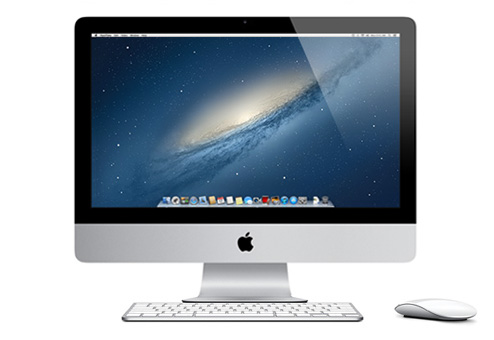
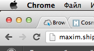
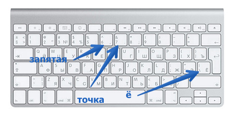
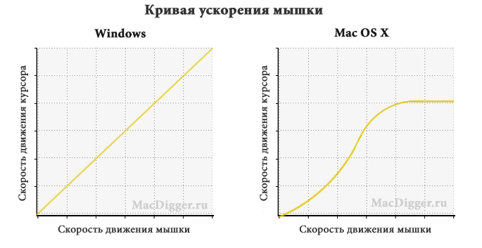

Компьютер занимает в моей жизни существенную часть. Очень хочется, чтобы эта существенная часть была продуктивной и комфортной. Системных блоков с ОС Windows у меня было достаточно, и, когда с очередным компьютером начинались проблемы, я каждый раз вспоминал о существовании компьютеров Apple. Они, по слухам, красивы, удобны, на них почти не бывает вирусов.
В общем, однажды после работы я решил проверить все эти утверждения на практике, заехал в «re:Store» в «Лапландии» и купил iMac.
Под Аймаком в дальнейшем я буду подразумевать моноблок фирмы Apple, с установленной ОС MacOS. Под обычным компьютером — обычный компьютер с Windows. Это, конечно, не совсем грамотно, но упрощает коммуникации.
Я мало разбираюсь уже в компьютерном железе, становлюсь потихоньку банальным потребителем, поэтому опишу свои, именно потребительские ощущения.

Достоинства Аймака перед обычным компьютером следующие:
Он тихий. Кроме Аймака у меня дома всё ещё есть обычный компьютер, причём с требовательным к охлаждению процессором Athlon. Шум его вентиляторов раздражает. Жаркий воздух, выдуваемый ими тоже раздражает. АйМак тих. За те три месяца сколько он стоит в комнате сына мы не выключали его ни разу. Кажется он засыпает спустя какое-то время, но просыпается по первому клику и через секунду готов к работе. Вентиляторов в нём, кажется нет, единственный шум, который слышно в абсолютной тишине — работа винчестера.
Экран. Около месяца я решал какую диагональ экрана выбрать. АйМаки продаются с двумя диагоналями экранов — 21,5" и 27". 27 дюймов, конечно, круто, но стоит на 20 тысяч рублей дороже и я опасался, что придётся крутить шеей при работе и отдыхе за компом. Выбрал 21,5", по прошествии времени, думаю, что выбор был верен. Экран с отличными углами обзора яркостью и вообще всё в порядке. Аймак можно покупать даже ради него.
Приятная клавиатура и мышь MagicMouse, в которой нет колёсиков и всего одна кнопка. В комплекте с компьютером идёт укороченная клавиатура, я не стал докупать полноразмерную, потому что решил попробовать перебраться со временем и на эппловский ноутбук, и переучивать руки ещё один раз не хочется. Мышь и клавиатура доставляют тактильную и визуальную радость, но при работе являются и источником проблем тоже.
Посмотрим на недостатки. Впрочем, большинство недостатков являются таковыми лишь из-за необходимости ломать существующие привычки.
В MacOS по-другому сделано буквально всё. Меняя операционную систему в день минимум два раза (на работе-то у меня Windows) я примерно представляю, что будет если на половине улиц города левостороннее движение, а на другой — правостороннее.
Кнопка закрытия окна в Windows расположена максимально удобно. Стоит вслепую навести курсор в правый верхний угол и кликнуть. Окно закроется. В MacOs кнопка закрытия находится справа, к тому же не в углу, а ниже — закрыть окно вслепую не получится.

Пришлось окончательно переходить на горячие клавиши. Которые, конечно, тоже отличны от Windows )
Месторасположение точки, запятой и буквы «ё» в раскладке Мака отличается от Windows. Это тоже расстраивает.

Ещё одним ломающим мозг недостатком стала работа мыши. Постараюсь объяснить: в ОС Windows отсутствует ускорение движения скорости мыши, то есть неважно с какой скоростью вы двигаете курсор — он подвинется ровно на расстояние пропорциональное подвинутой вами мыши. В MacOS всё сложнее, здесь есть зависимость от скорости движения мыши — чем быстрее вы двигаете ею, тем на прогрессивно большее расстояние подвинется курсор. Это не объяснить словами, но поставить курсор в нужное место с непривычки становится настоящей задачей. Проблему можно вылечить установкой утилиты а 20$, но не для продвинутых мышей MagicMouse.

Кроме этого, у вас не выйдет, к примеру, переименовать файл в диалоге открытия или сохранение файла. Неужели мне одному это нужно?
Перейдём к софту. Софт — платный. Не такой платный как MS Office или Фотошоп. Софт платный весь. Там где в Windows существует куча бесплатных альтернатив, в MacOS не стесняются просить 99 рублей. Родной софт для многих задач или отсутствует вовсе или ужасен. Может быть это не самая частоиспользуемая программа у пользователей маков, но с Finder, аналогом виндуосовского Проводника, просто невозможно иметь дел. Замена — 40$. Клиент для твиттера, на замену страшному родному — 649 рублей. Любимый многими обладателями айпэдов таск-менеджер Things для мака стоит 1690 рублей. Забавно, но к этому привыкаешь. Платный софт — своего рода страховка от зоопарка программ на компьютере, к выбору подходишь более взвешенно. К тому же нельзя не отметить удобство установки. В большинстве случаев достаточно просто перетащить программу в папку «Программы».
Кстати, спустя недели три после покупки, я увеличил количество оперативной памяти с 4 гигабайт до максимально возможных 16. Сделал это сам, просто поехал, купил в магазине 4 плашки ноутбучной памяти и воспользовался инструкцией. К слову, в Ресторе плашка памяти стоит 1990 рублей, а в ДНС, который этажом ниже в Лапландии — 850.
За Аймак в начале октября я заплатил около 45 тысяч рублей. Спустя несколько недель Apple объявил о выходе обновлённого Аймака, но поводов для расстройств я так и не нашёл. Обновлённый Аймак пока не продаётся в России, а купленный мной за 45, стал отчего-то стоить уже 53. Уже три месяца я работаю с приятным инструментом постоянно узнаю что-то новое, чего и тебе желаю.